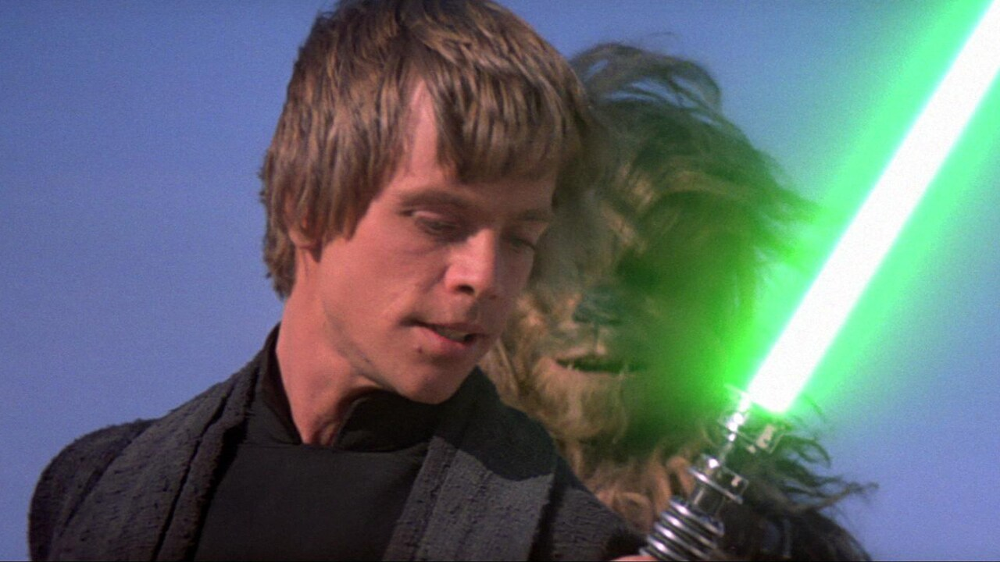
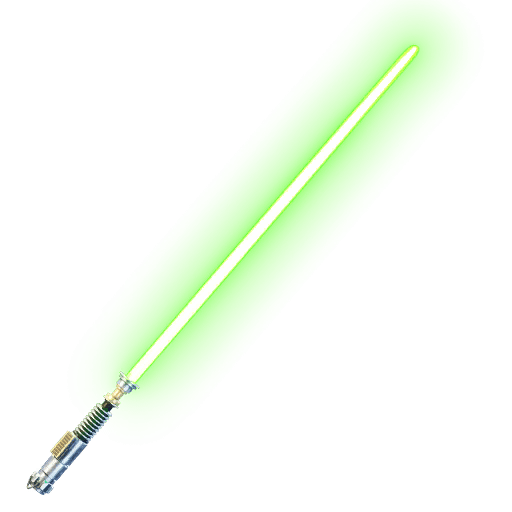
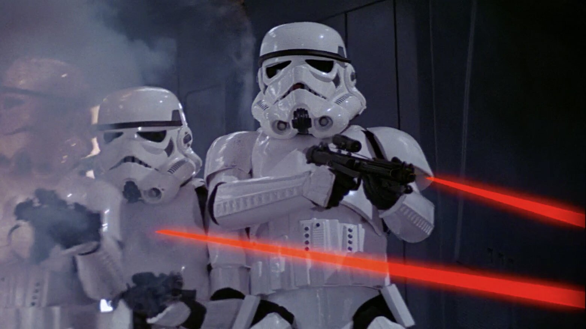
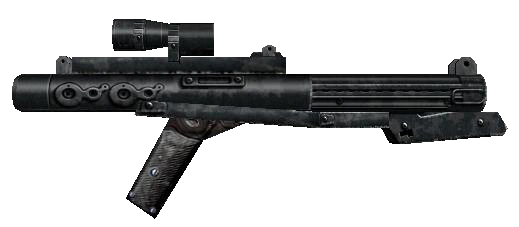
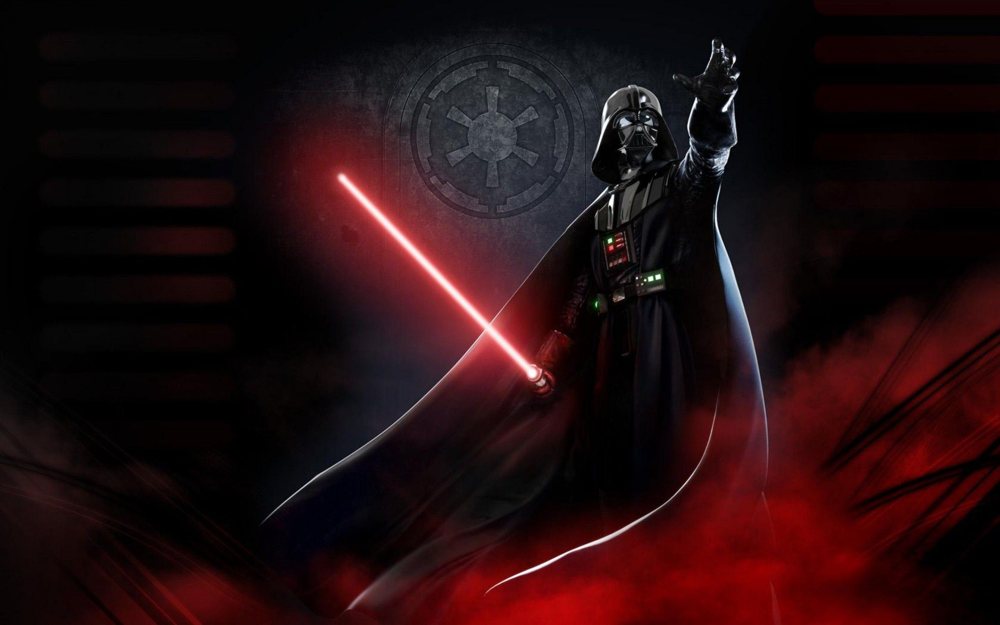
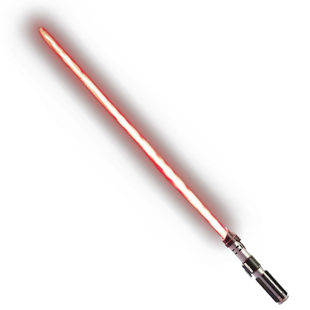
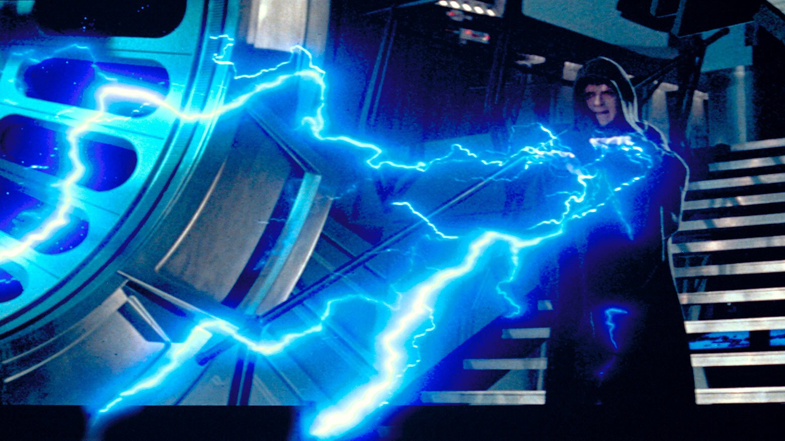
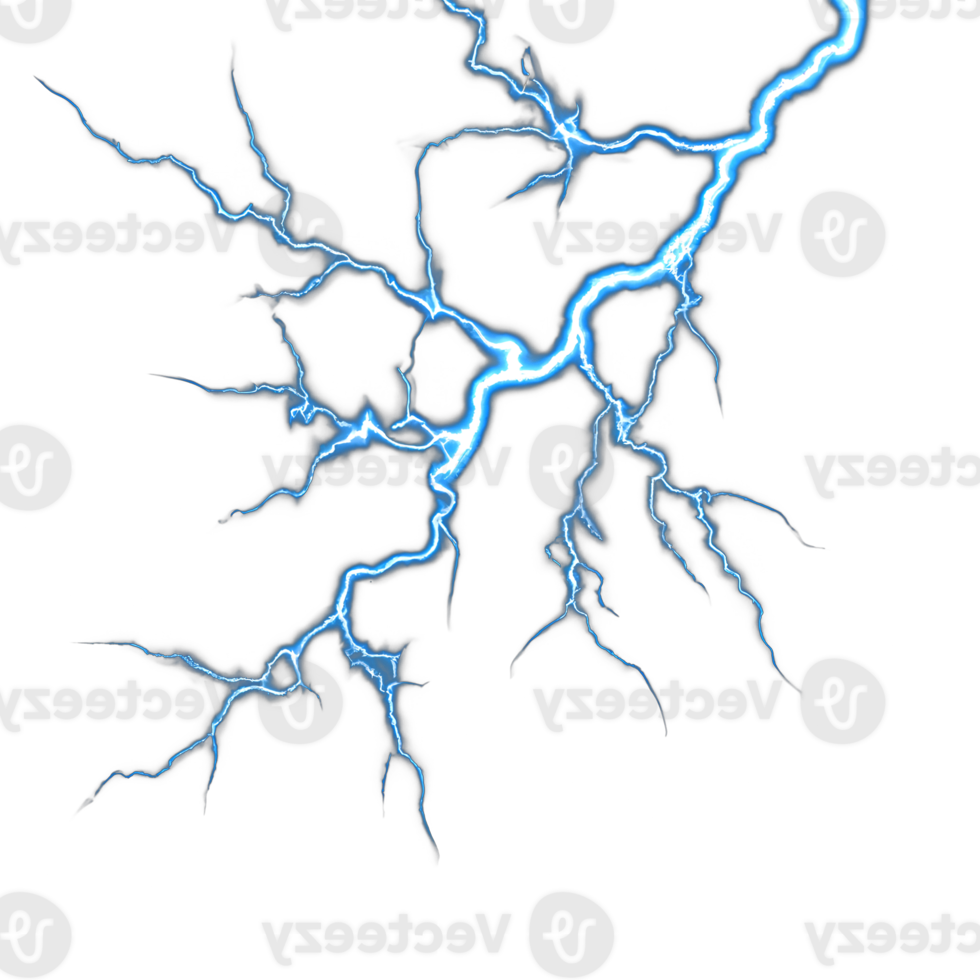
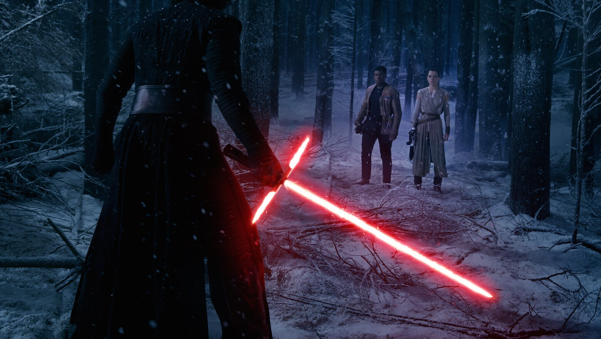
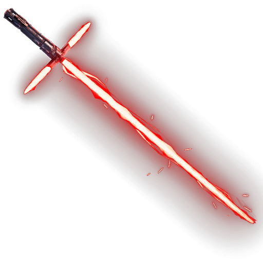

Este cuchillo adornado, que una vez fue propiedad de Ochi de Bestoon, envía un shock a través de Rey cuando lo toca,
ya que las malas acciones cometidas con él aún resuenan en la Fuerza. Las runas Sith talladas en la hoja revelan la ubicación del buscador de caminos Sith perdido del Emperador,
pero la programación de C-3PO le prohíbe traducirlas. Desbloquear los misterios del arma siniestra llevará a Rey a un fatídico descubrimiento sobre sus propios orígenes.
SABLE DE LUZ DE LUKE SKYWALKER


Después de perder el sable de luz de su padre en Cloud City, Luke Skywalker construyó un reemplazo con una hoja de plasma verde,
su empuñadura similar a la del arma de Obi-Wan Kenobi. Luke escondió su sable de luz dentro de la cúpula de R2-D2 durante su misión de rescatar a
Han Solo de Jabba the Hutt y entregó el arma a Darth Vader como parte de su esfuerzo por despertar el espíritu de Anakin Skywalker.
RIFLE BLÁSTER


Blásters más grandes y potentes, a menudo utilizados por Stormtroopers,
clones o cazarrecompensas. Otras formas incluían rifles de francotirador.
EL SABLE DE LUZ DE DARTH VADER


Después de comprometerse con el Lord Sith Darth Sidious, Anakin Skywalker tomó el nombre de Darth Vader pero continuó usando el sable de luz de hoja azul con el que había luchado durante las Guerras Clon.
Perdió esta arma en Mustafar y construyó un reemplazo con la hoja carmesí preferida por los Sith.
Vader usó su sable de luz Sith rara vez pero con un efecto mortal, como descubrieron los enemigos del Imperio.
RAYO DE FUERZA


Rayo de fuerza es una habilidad del lado oscuro que se usa para torturar, desfigurar e incluso matar a las víctimas.
De color azul, los Sith disparan rayos de fuerza de sus manos invocando su odio y sentimientos agresivos.
Sin embargo, aunque es un arma mortal, no es imparable. Los rayos de fuerza pueden ser desviados y absorbidos por
un sable de luz, y los Jedi selectos han demostrado ser capaces de neutralizar la técnica a través del poder del lado luminoso.
EL SABLE DE LUZ DE KYLO REN


El sable de luz cruzado de Kylo Ren es un diseño antiguo que recuerda a las armas vistas hace milenios durante el Gran Azote de Malachor. Las hojas de protección cruzada, o gavilanes, emergen de los activadores de cristal de enfoque que dividen la corriente de plasma del sable de luz en tres canales,
y los gavilanes aparecen después de que se enciende la hoja principal. Las hojas cruzadas permiten que el sable de Ren funcione de manera segura: su arma está construida alrededor de un cristal kyber peligrosamente defectuoso, que estaría sobrecargado si no fuera por las ventilaciones laterales de plasma que crean los gavilanes.